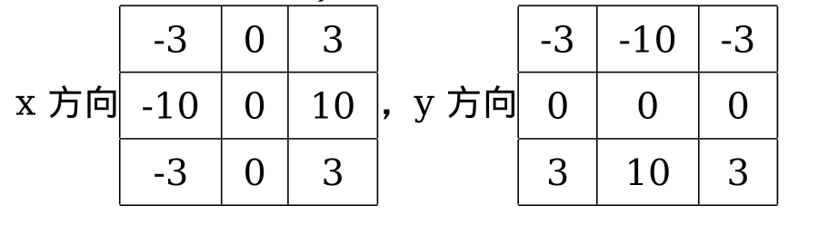
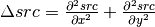
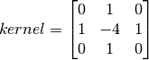
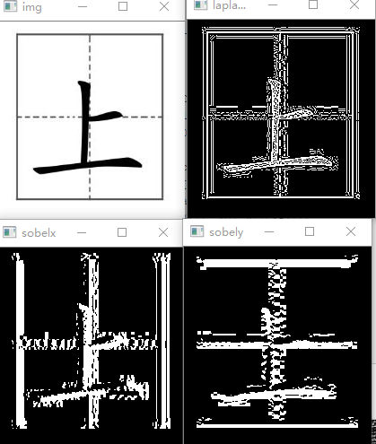
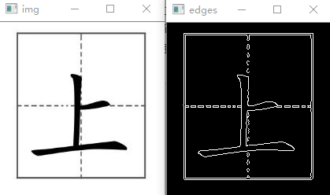
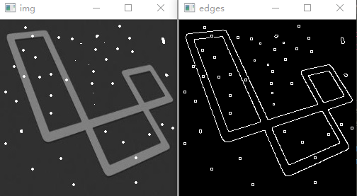
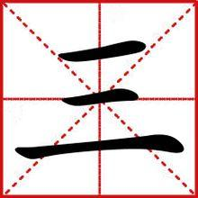
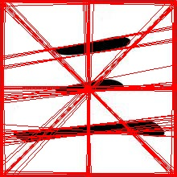

图像梯度
当用均值滤波器降低图像噪声时，会带来图像模糊的副作用。但是当我们要求清晰的图像时，就不能使用之前的图像变换来求像素值了。图像模糊是因为图像中物体的轮廓不明显，轮廓边缘灰度变化不强烈，层次感不强造成的，那么反过来考虑，轮廓边缘灰度变化明显些，层次感强些是不是图像就更清晰些呢。此时，我们可以使用图像的函数来定义图像，可以使用函数的导数（梯度）来表示的变化程度，这样既可以避免直接修改图像的像素值而引进新的模糊，还能更直观的显示出图像的变化。比如，在图像中物体的边缘的变化量比较大，物体中的变化量较小，因此可以用图像梯度来进行边缘检测以及一系列的图像处理。
### 一、边缘检测
边缘检测常用的算子有：高通滤波器（sobel算子，Scharr
算子，laplacian算子）和canny算子。
Sobel，Scharr 其实就是求一阶或二阶导数。Scharr 是对
Sobel（使用小的卷积核求解求解梯度角度时）的优化。Laplacian
是求二阶导数。
1. sobel算子和Scharr 算子
Sobel
算子是高斯平滑与微分操作的结合体，所以它的抗噪声能力很好。你可以设定求导的方向（xorder
或 yorder）。还可以设定使用的卷积核的大小（ksize）。如果
ksize=-1，会使用 3x3 的 Scharr 滤波器，它的的效果要比 3x3 的 Sobel
滤波器好（而且速度相同，所以在使用 3x3 滤波器时应该尽量使用 Scharr
滤波器）。3x3 的 Scharr 滤波器卷积核如下：

2. Laplacian算子
拉普拉斯算子可以使用二阶导数的形式定义，可假设其离散实现类似于二阶
Sobel 导数，事实上，OpenCV 在计算拉普拉斯算子时直接调用 Sobel
算子。计算公式如下：

拉普拉斯滤波器的卷积核为：

代码示例：
1
2
3
4
5
6
7
8
9
10
11
12
13
| import numpy as np
import cv2
img = cv2.imread("6.jpg",0)
laplacian = cv2.Laplacian(img,cv2.CV_64F)
sobelx = cv2.Sobel(img,cv2.CV_64F,1,0,ksize=5)
sobely = cv2.Sobel(img,cv2.CV_64F,0,1,ksize=5)
cv2.imshow("img",img)
cv2.imshow("laplacian",laplacian)
cv2.imshow("sobelx",sobelx)
cv2.imshow("sobely",sobely)
|

3. Canny边缘检测
canny边缘检测时一种非常流行的边缘检测算法，是由很多步骤组合而成的。
3.1 噪声去除
因为边缘检测容易受到噪声的影响，所以需要使用高斯滤波或其他方法将噪声去除。
3.2计算图像梯度
对于平滑后的图像使用Sobel算子计算水平核竖直方向的图像梯度（方法如上），根据得到的两幅梯度图找到边界的梯度核方向。
3.3非极大值抑制
在获得梯度的方向和大小之后，应该对整幅图像做一个扫描，去除那些非边界上的点。对每一个像素进行检查，看这个点的梯度是不是周围具有相同梯度方向的点中最大的。
3.4滞后阈值
现在要确定那些边界才是真正的边界。这时我们需要设置两个阈值：minVal 和
maxVal。当图像的灰度梯度高于 maxVal 时被认为是真的边界，那些低于 minVal
的边界会被抛弃。如果介于两者之间的话，就要看这个点是否与某个被确定为真正的边界点相连，如果是就认为它也是边界点，如果不是就抛弃。
代码示例：
1
2
3
4
5
6
7
| import cv2
img = cv2.imread("img.jpg",0)
edges = cv2.Canny(img,100,200)
cv2.imshow("img",img)
cv2.imshow("edges",edges)
|

由于图像无噪声，所以效果较好。
再来一张有噪声的：

由于噪声点较大，效果中将噪声点误判为边界。
二、霍夫变换
霍夫变换在检测各种形状的的技术中非常流行，如果你要检测的形状可以用数学表达式写出，你就可以是使用霍夫变换检测它。及时要检测的形状存在一点破坏或者扭曲也可以使用。直线和圆都是可以用数学表达式表示出来的，所以图像中的直线和圆是可以用霍夫变换得到的。
1.霍夫直线变换
在opencv中，霍夫直线变换的函数为cv2.HoughLines()，其返回值为（）,的单位为像素，的单位是弧度。这个函数的第一个参数是一个二值化图像，所以在进行霍夫变换之前要首先进行二值化，或者进行Canny
边缘检测。第二和第三个值分别代表 ρ 和 θ
的精确度。第四个参数是阈值，只有累加其中的值高于阈值时才被认为是一条直线，也可以把它看成能检测到的直线的最短长度（以像素点为单位）。
代码示例：
1
2
3
4
5
6
7
8
9
10
11
12
13
14
15
16
17
18
19
20
21
22
23
24
25
26
27
28
29
30
31
|
import numpy as np
import cv2
img = cv2.imread("img.jpg")
gray = cv2.cvtColor(img,cv2.COLOR_BGR2GRAY)
edges = cv2.Canny(gray,10,100,apertureSize = 3)
lines = cv2.HoughLines(edges,1,np.pi/180,200)
print(lines)
'''
[[[216. 1.5707964]]
[[ 3. 0. ]]
[[216. 0. ]]
[[ 3. 1.5707964]]]
'''
for rho,theta in lines[0]:
a = np.cos(theta)
b = np.sin(theta)
x0 = a*rho
y0 = b*rho
x1 = int(x0 + 1000*(-b))
y1 = int(y0 + 1000*(a))
x2 = int(x0 - 1000*(-b))
y2 = int(y0 - 1000*(a))
print((x1,y1),(x2,y2))
cv2.line(img,(x1,y1),(x2,y2),(0,0,255),10)
cv2.imshow("img",img)
|
原图：变换后：
只在下方显示出了直线，可能是阈值设置的不合适。
2.霍夫圆变换
圆形的数学表达式为，其中（ ）为圆心的坐标，r
为圆的直径。从这个等式中我们可以看出：一个圆环需要
3个参数来确定。所以进行圆环霍夫变换的累加器必须是 3
维的，这样的话效率就会很低。所以 OpenCV
用来一个比较巧妙的办法，霍夫梯度法，它可以使用边界的梯度信息。我们要使用的函数为
cv2.HoughCircles()。
代码示例：(引用自opencv教程)
1
2
3
4
5
6
7
8
9
10
11
12
13
14
15
| import numpy as np
import cv2
img = cv2.imread("imgs.jpg",0)
img = cv2.medianBlur(img,5)
cimg = cv2.cvtColor(img,cv2.COLOR_GRAY2BGR)
circles = cv2.HoughCircles(img,cv2.HOUGH_GRADIENT,1,20,param1=50,param2=30,minRadius=0,maxRadius=0)
circles = np.uint16(np.around(circles))
for i in circles[0,:]:
#绘制圆
cv2.circle(cimg,(i[0],i[1]),i[2],(255,0,0),2)
#绘制圆心
cv2.circle(cimg,(i[0],i[1]),2,(0,0,255),3)
cv2. imshow('detected circles',cimg)
cv2. imwrite('circle.jpg',cimg)
|
原图：圆变换：
这里略偷懒一下，使用教程中的图片及代码来进行描述。在霍夫直线变换中阈值设置存在问题，导致效果不明显。